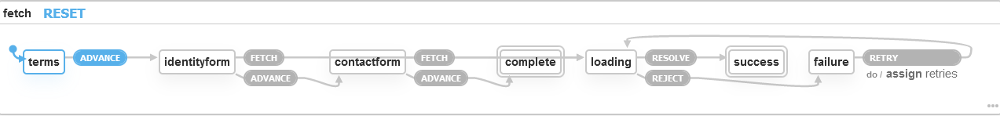

Tracking Loading State
WELCOME to my first blog post. Today I want to outline some state management patterns I’ve been working with lately, as a jumping off point for further discussions and extreme mental weather systems.
The problem I’m trying to address is SPAs have UI components and UX paths that are dependent on asynchronous request states, and the emergent states thereof are driving me insane.
The theoretical example I want you to imagine while working through this article is a registration form that fetches LUT data for some of its fields, in particular for a states drop down/type ahead suggester and a gender select/radio option. I know it’s a bit of a stretch.
Basic solution
Check dataset.length
<template>
<main>
<registration-component v-if=isNotLoading />
<loading-animation v-if=isLoading />
</main>
</template>
<script>
export default {
// ...,
computed: {
isLoading() {
return this.data.length == 0;
}
// ...
}
}
</script>
This is dirt simple to implement and understand. It also obscures the entire registration component based on loading data. If the component is unusable without seed data this is fine, but generally the user can interact with parts of a form like this without waiting for the application to load LUTs.
Obviously there are limitations to this approach around loading multiple or empty data sets. If an empty dataset is acceptable then this isLoading function is broken.
localize it
<template>
<div>
<select v-if=notLoading>
<option v-for="state in states">{{ state }}</option>
</select>
<loading-animation v-if=isLoading />
</div>
</template>
<script>
export default {
name: 'state-selector'
// ...
}
</script>
Now we’re really cooking. It hides just the component waiting on loading data (the state selector), and manages all that state internally. We may even attain the myth of component reusability. A slightly better solution is to display, instead of loading animation, a text input box. If the user is automating their entry in anyway, for example with browser-based form-filling features, then the user can theoretically finish the form before the data is ever fetched. If loading finishes, use a callback and match the input to the LUT. That’s some good UX:
<template>
<div>
<select name=state v-if=notLoading v-model=selectedState>
<!-- ... -->
</select>
<input name=state v-if=loading type=text v-model=typedState />
</div>
</template>
Wrapping component
Maybe we don’t want the user submitting if lookups haven’t loaded though. Perhaps the lookups codify state or other registration parameters into an acceptable format, perhaps for an API we do not control, requiring us to strictly handle data passed to it. We may then disable the submit button if it hasn’t loaded. This means we need to know the loading state of these components. The ever dreaded children→parent communication 😨
Not to fret. We can use a pattern like that in vee-validate’s <ValidationObserver /> component to accomplish the same, though it will in most cases ruin the encapsulation described above (noooo! I thought we might finally escape the rains of repetition…)
<template>
<div>
<component
v-if=notLoading
:is=component
:data=loadedData
v-on=$listeners
/>
<loading-animation v-if=loading />
</div>
</template>
<script>
export default {
name: 'data-loading-component'
, props: ['component', 'generator']
, data() {
return {
loading: true
, loadedData: null
};
}
, created() {
generator().then(
d => {
this.loadedData = d;
}
);
}
}
</script>
Using vm.$listeners allows for messages to be passed up the chain, for example from a validated input or some such.
While annihilating most of the encapsulation, it does provide other opportunities. The <component> above can be replaced with a default slot, for example, which means the UI element doesn’t need to be defined in terms of being a child of <DataLoadingComponent>. In this example we have both a state select box and a gender select box, the former passing a component as a prop and the latter using a slot.
<template>
<form>
<data-loading-component-with-props
:generator="api.getStates"
component="state-selector"
/>
<data-loading-component-with-slots
:generator="api.getStates"
>
<select name=gender slot-scope=genders>
<option v-for="gender in genders">{{ gender }}</option>
</select>
</data-loading-component>
</form>
</template>
Refinements
Depending on the page requirements maybe the <DataLoadingComponent> is overkill. Or maybe there’s a philosophical opposition to wrapper components, like you might encounter working on a team with me. ⚔
In order to maintain an awareness about what has loaded and what hasn’t, and, also important but outside of the scope of this article TRACK ERROR state as derived from request statuses, we’re going to have to implement a centralized store for application state. There are many ways to do this. One is the event bus which I’m not going to bother demoing: I don’t know how. Rather, I don’t know how to do it without feeling dirty.
Option two would be an FSM-style API like Vuex. I’ve worked with one model quite a bit recently.
FSM request history
const DATA_REQUESTED = Symbol('DATA_REQUESTED');
const DATA_RECEIVED = Symbol('DATA_RECEIVED');
const ERROR_RECEIVED = Symbol('ERROR_RECEIVED');
const state = { history: [] };
const mutations = {
requestData: (state, data) => state.history.unshift(
{event: DATA_REQUESTED, data}
)
, recordData: (state, data) => state.history.unshift(
{event: DATA_RECEIVED, data}
)
, recordError: (state, data) => state.history.unshift(
{event: ERROR_RECEIVED, data}
)
};
const getters = {
receivedData: state => state.history[0].event == DATA_RECEIVED
, loadingData: state => state.history[0].event == DATA_REQUESTED
, receivedError: state => state.history[0].event == ERROR_RECEIVED
};
The getters need to be slightly less naive to avoid reactive TypeErrors, but I leave that as an exercise to the (pull request) reader. A build pattern can be used to attach this to a store for each LUT object, for example:
modules: {
LUT: {
namespaced: true
modules: {
states: createRequestManagementStore(statesStore)
, genders: createRequestManagementStore(gendersStore)
}
}
}
And then code up fetching actions looking handsome like:
async function fetchStates({commit}) {
commit('LUT/states/requestData', 'fetchStates');
try {
const states = await this.api.states.get();
commit('LUT/states/setStates', states);
commit('LUT/states/recordData', states);
} catch (e) {
commit('LUT/states/recordError', e);
}
}
With a tiny bit of refactoring an action generator could be made. Just think how much would actually differ from fetchStates to fetchGenders. Just some constants that could be extrapolated by reflection or parameterization.
This can be folded into a larger component such as:
<script>
export default {
// ...
computed: {
...mapGetters('LUT/states', {
'isLoadingStates': 'loadingData'
. 'errorLoadingStates': 'hasError' }
), ...mapGetters('LUT/genders', {
'isLoadingGenders': 'loadingData'
, 'errorLoadingGenders': 'hasError'
}
), isLoading() {
return this.isLoadingStates && this.isLoadingGenders;
}
}
// ...
}
</script>
Now we can disable our submit button using vm.isLoading and disable individual components as needed with their respective loading attributes, and we can see if we have an error, and perhaps display it, or in someway notify the user that today just isn’t their day.
Now we’re also in a place where we can start to easily reason about derivative states, and even use tools to identify unexpected emergent application states. With the above JS and a template filled with v-if=isLoading sorts of conditional rendering directives, we can model application state as sets of loading and error values, which makes it easier to write tests that are less closely coupled with implementation than if we ran a <DataLoadingComponent> arch as above. Initialize the component, stub the computed props, and make assertions about the properties you’d expect from the derivative state:
test('states loaded successfully, gender errored out', () => {
const wrapper = mount(RegistrationComponent, {
computed: {
isLoadingGenders: () => false
, errorLoadingGenders: () => true
, isLoadingStates: () => false
, errorLoadingStates: () => false
}
});
expect( /* assertions about an error showing,
about a select box not/being disabled,
etc */);
});
Note: stubbing the store properties is a better way to achieve this, but uglier to demo.
Now that we’ve developed this method, let me point out: it sucks for frequent chatter, it becomes quite hefty when you have a lot of loading states to track (loadingStates, loadingGenders, loadingInstitutions, loadingAcademicPrograms, loadingAcademicYears = 2^(5*2) states to understand 🤯) and it absolutely fails in its current form if the same request has to be made multiple times. A reducer for history can of course be written in the latter case but it’s a very messy way to handle multiple app-lifecycle requests on the same resource.
And so on
Software development is like writing music: there are many ways to elaborate on a given theme. The finite state machine pattern outlined above is just one, and it’s not even one that necessarily overrides the observer pattern above that. The two can be used together given an application that makes it worth it. And there are still other methods of approaching this problem or fine-tuning the solution. Two options that immediately come to mind that I only have a tiny bit of experience with but would like to experiment on more are using a progressive FSM like xstate to model application state as a function of ongoing network access and using workers to encapsulate requests and move them out of the UI thread for performativity.
Progressive FSM
The xstate library offers some cool ways to approach this. I don’t want to make this article too specialized by focusing on any singular library (even though much of this has been directed at Vue development), but its event-driven state charts are a useful paradigm, especially in multi-part SPAs, where advancing to a “stage” of the application is user and/or network driven. It’s design choice to make promises, async generators and Rx observables first-class state machines that can compose with more traditional FSM paradigms really makes it shine here. It can also be be used to implement reflective, generative property-based state testing.
For our <RegistrationComponent> perhaps we have states and gender on separate pages. After we collect some identity data like gender and race, we’ll confirm they are eligible and only if they are proceed to the contact info screen where the states dropdown is located. Only upon reaching the states dropdown should we even bother loading it (though we can estimate when we will get to it and prefetch it to avoid loading stuff, but only when we know we will get to that application state!) to avoid wasting any user time. I’ve used the xstate visualizer to outline an example state machine:

The Reddit API tutorial is a great place to see examples of this paradigm.
Workers
An idea I’ve only just begun to toy with is sourcing all frontend API requests through a worker. On page-initialization the worker is initialized and maintains an internal state of requests and their states. This is the approach stockroom uses. Workers have the very clear benefit of removing state and request computation from the UI thread, making SPAs more performative over all, but they also look a bit like magic in a repo, perhaps owing to their underutilization.
There are examples out there, including one I found specifically targeting concurrent vuex architecture, of how to deploy worker state machines. With the web worker’s limited API, message-based FSM stores seem like a natural venue for exploration.
Conclusion
None. This is an ongoing discussion and the ideal solution can only be identified on a problem-by-problem basis. However, I hope this has provided some value in the form of perhaps illuminating some previously unconsidered solutions or expanding on their limitations and implicit expectations.